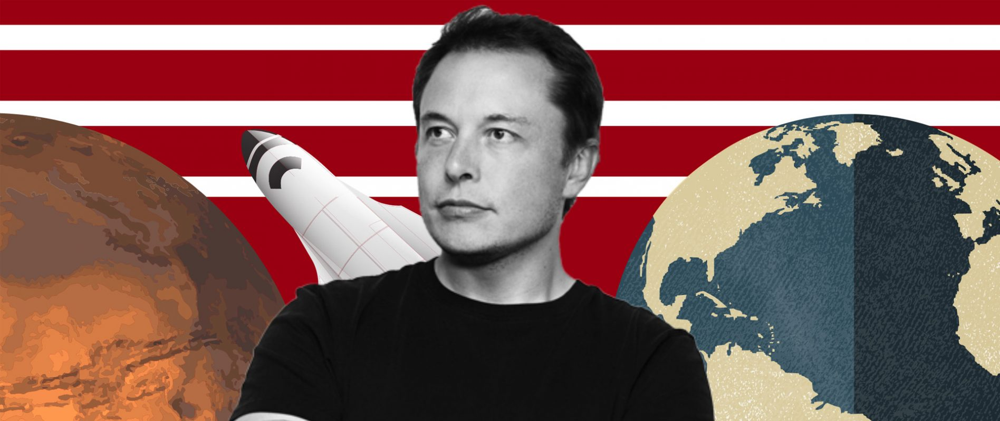
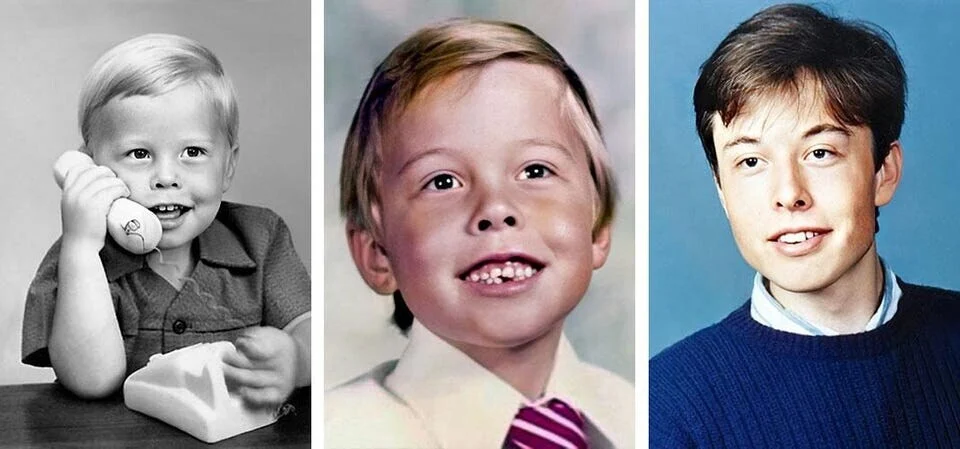
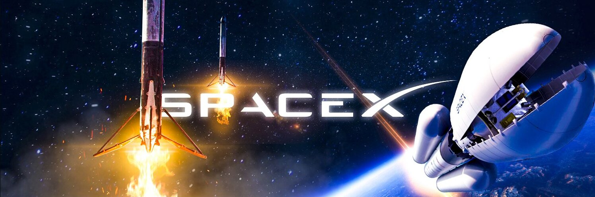
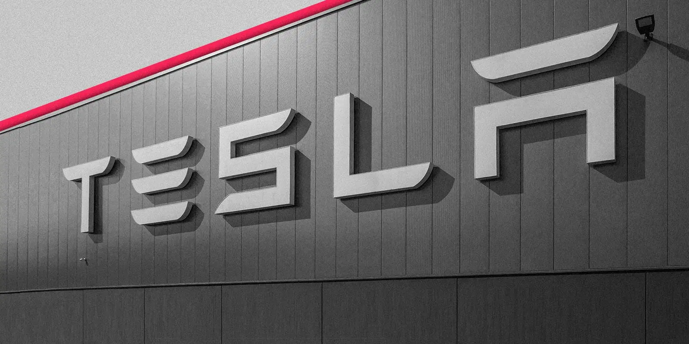
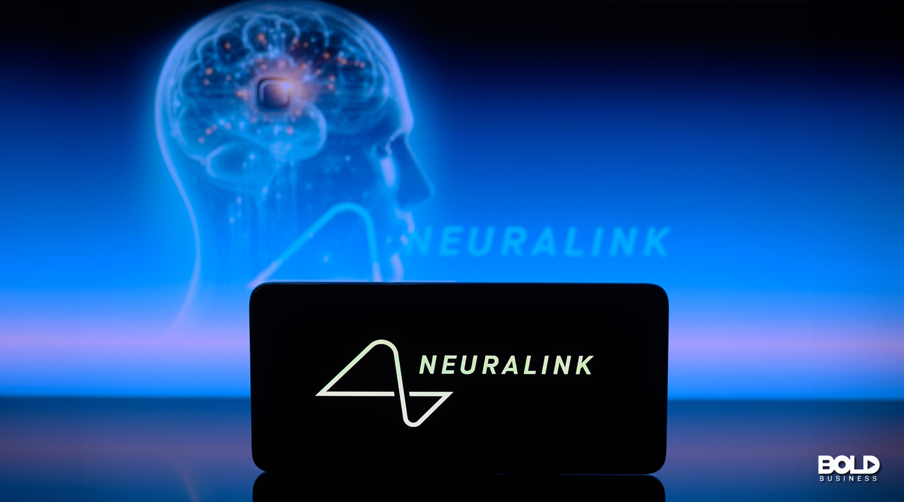

Elon Musk
Elon Musk adalah seorang pengusaha visioner, insinyur, dan penemu. Ia dikenal karena mendirikan perusahaan seperti SpaceX, Tesla, dan Neuralink, serta ambisinya untuk merevolusi industri transportasi, energi, dan eksplorasi luar angkasa.
Kehidupan Awal
Elon Musk lahir pada 28 Juni 1971, di Pretoria, Afrika Selatan. Ia menunjukkan minat dalam teknologi sejak kecil. Pada usia 12 tahun, ia menjual kode video game pertamanya. Setelah menyelesaikan pendidikan di Afrika Selatan, ia pindah ke Amerika Serikat untuk melanjutkan studinya di Universitas Pennsylvania.
SpaceX
Pada tahun 2002, Elon Musk mendirikan SpaceX dengan tujuan mengurangi biaya perjalanan luar angkasa dan menjadikan eksplorasi ruang angkasa lebih terjangkau. Salah satu pencapaian terbesar SpaceX adalah peluncuran roket Falcon 9, yang dapat digunakan kembali dan berhasil mengurangi biaya peluncuran.
Tesla
Elon Musk bergabung dengan Tesla Motors pada tahun 2004, tidak lama setelah perusahaan tersebut didirikan. Tesla berhasil mengubah pandangan masyarakat tentang mobil listrik, berkat inovasi seperti Tesla Model S, Model X, dan Model 3. Tesla juga mengembangkan teknologi baterai dan energi terbarukan, mempercepat transisi dunia ke energi bersih.
Neuralink
Neuralink adalah perusahaan teknologi yang didirikan oleh Musk pada tahun 2016, yang berfokus pada pengembangan antarmuka otak-komputer. Proyek ini bertujuan untuk memungkinkan manusia berinteraksi dengan mesin secara lebih cepat dan efisien, serta membantu mengobati penyakit neurologis.
The Boring Company
The Boring Company didirikan pada tahun 2016 oleh Elon Musk untuk mengatasi masalah kemacetan lalu lintas melalui pembangunan terowongan bawah tanah untuk transportasi cepat. Proyek ini berupaya mengembangkan teknologi transportasi yang lebih efisien di daerah perkotaan.

Proyek Lainnya
- SolarCity: Perusahaan energi surya yang didirikan untuk mempercepat adopsi energi terbarukan.
- Hyperloop: Sistem transportasi berkecepatan tinggi yang dirancang untuk memindahkan orang dan barang dengan kecepatan yang sangat tinggi dalam tabung vakum.
- Starship: Kendaraan luar angkasa yang dikembangkan oleh SpaceX untuk misi ke Bulan, Mars, dan lebih jauh lagi.
- X (sebelumnya Twitter): Pada tahun 2022, Musk mengakuisisi Twitter dan mengubah namanya menjadi "X" dengan visi untuk mengubah platform menjadi aplikasi yang lebih universal untuk berbagai layanan digital.